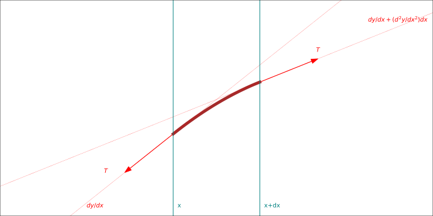
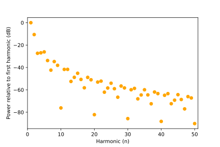
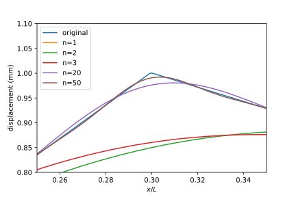

Part 1, The continuous world: Fourier series to Fourier transforms
This article is part of a series:
- Part 1, The continuous world: Fourier series to Fourier transforms
- Part 2, Discrete time
- Part 3, Unifying the continuous and discrete worlds: the dirac comb
There is something special about waves. You can see them as the oscillating ocean surface, bobbing ships up and down as they travel to far off places. You can see them when you strike a long metal hand-rail, as the metal vibrates and causes the pole to be blurry in your vision, and then hear them as the metal transfers its vibration into the pressure of the air. You can see them quite literally, because light is just a ripple in the invisible electromagnetic field vibrating at \(10^{15}\) cycles per second.
The exponential function
The exponential function is defined as the power series
\[e^z = 1+z+\frac{z^2}{2!}+\frac{z^3}{3!}+\cdots\]
If you plot \(e^{i\theta}\) in the complex plane, as you increase \(\theta\) you will see a particle starting from the x-axis, rotating counterclockwise in a unit circle at constant speed. From this we define cosine and sine as the real and imaginary parts:
\[\cos(\theta) := {\operatorname{Re}}(e^{i\theta}) = \frac{1}{2}(e^{i\theta}+e^{-i\theta})\]
\[\sin(\theta) := {\operatorname{Im}}(e^{i\theta}) = \frac{1}{2i}(e^{i\theta}-e^{-i\theta})\]
Euler’s formula summarizes this decomposition nicely:
\[e^{i\theta} = \cos(\theta) + i\sin(\theta)\]
Differentiating the power series yields a very special property for the exponential function:
\[{\frac{\partial }{\partial t}}(e^t) = e^t\]
(I am restricting myself to functions \({\bf R}{\rightarrow}{\bf C}\). This also holds true for \({\bf C}{\rightarrow}{\bf C}\), but that requires complex analysis to explain, and isn’t really relevant right now). This gives us a really neat alternative definition: “The exponential function is defined as the unique eigenfunction of the differentiation operator with eigenvalue 1, such that \(e^0=1\)”.
Because it turns out pretty much every formula in physics is a differential equation, the operator \(({\frac{\partial }{\partial t}})\) is extremely important. That is why the exponential function has been dubbed “the most important function in mathematics” (Walter Rudin). In general the derivative does messy things to your function. But if you can express your function as the sum of exponentials, now you’ve got some serious simplification power.
Inner product spaces and Dirac notation
The idea of inner products originates from the 3D Euclidean vectors used in classical mechanics. In that context, a vector \(v\) is an arrow in 3D space; if you place the tail of the arrow at the origin, you can associate the vector with the coordinates at the head, \((v_1, v_2, v_3)\). The dot product of two vectors \(u,v\) is defined as \(u\cdot v = u_1v_1+u_2v_2+u_3v_3\). It essentially measures how aligned they are. Two vectors that are perfectly aligned will give maximum dot product; perpendicular will give 0; anti-parallel will give most negative dot product. Notice in particular that \(v\cdot v = |v|^2\); in fact this property can be used to define the length of a vector. They are also used for decomposing a vector into coordinates. If you have an orthonormal basis \(\{e_1, e_2, e_3\}\), you can project my vector \(v\) onto the lines spanned by each of them, so that projecting it onto \(e_1\), for example, will give the vector \((v\cdot e_1)e_1\). (By orthonormal basis, I mean a basis in which the vectors are orthogonal to each other and each of unit length.) Because these three basis vectors span the entire 3-dimensional space, adding the three projection vectors will perfectly reconstruct the original vector.
But no one is content sticking to three dimensions. The same concepts can be applied to vectors of arbitrary dimension, so that for \(u,v\in {\bf R}^n\), \(u\cdot v = \sum_i u_iv_i\). The real fun begins when we try to extend this concept to complex vectors, that is, to \({\bf C}^n\). Because length is absolutely essential to geometry, we would like to preserve the idea that the product of a vector with itself is its length squared, in particular, that it is real. Hence we will define the product of two vector \(u,v\in {\bf C}^n\) as \(\sum_i u_i^* v_i\). Hence, the product of \(v\) with itself is \(\sum_i v_i^* v_i = \sum_i |v_i|^2\), which makes sense.
Here we formalize the concept of an inner product, which is a generalization of all the ideas expressed above. An inner product over a complex (or real) vector space \(V\) is defined as a function \(\braket{\cdot | \cdot}\) mapping \(V\times V{\rightarrow}{\bf C}\) which has these three properties:
- Linearity: \(\braket{u|a v + b w} = a\braket{u|v} + b\braket{u|w}\)
- Conjugate symmetry: \(\braket{u|v} = \braket{v|u}^*\)
- Positive definite: \(\braket{v|v}\) is greater than zero if \(v\neq 0\), and \(0\) otherwise. In particular, its value is real.
Three quick notes:
First of all, this definition works equally well with a real vector space, since the complex conjugate of a real number is just itself.
Second, properties 1 and 2 combine to give \(\braket{au + bv| w} = a^* \braket{u|w} + b^* \braket{v|w}\). It can be tricky to remember that if we take the complex scalar out of the first argument, it must be complex conjugated.
Third, these definitions seem more general than our previous complex-coefficient based way of calculating inner products, but it is actually not. If we are given a finite dimensional complex inner product space \(V\), we are guaranteed by the Gram-Schmidt procedure to find an orthonormal basis \(\{e_1,\cdots,e_n\}\), where \(\braket{e_i|e_j}\) is 0 if \(i\neq j\) and 1 if \(i=j\). Hence the inner product of any two vectors is, by linearity, \(\braket{u|v} = \braket{\sum_i u_i e_i | \sum_j v_j e_j} = \sum_{i,j} u_i^* v_j \braket{e_i | e_j} = \sum_i u_i^* v_i\), which is precisely our old definition.
So our new definition is still the same familiar product. However, it does not reference any particular basis, and it gives us a new way to apply inner products to the strange world of uncountably-infinite dimensional vector spaces.
Fourier series
To keep the math consistent, in the pure mathy parts I will always use \(t\) as the independent variable, \(x,y\) as functions of \(t\), and \(f\) to denote frequency. Keep in mind the same math can be applied whether your independent variable is space or time. In the physics parts however I reserve the right to go crazy with variable names.
Consider the space of square-integrable functions \([a,b]\rightarrow {\bf C}\), written \(L^2([a,b], {\bf C})\), which consists of all functions \(f: [a,b]\rightarrow {\bf C}\) such that \(\int_a^b |f|^2 dt < \infty\). It is a complex vector space, and we can define an inner product on it: \(\braket{x(t)|y(t)} := \int_a^b x^*(t)y(t)dt\). Now let’s consider what the inner product of two exponentials looks like: \(\braket{e^{2\pi if_1 t}| e^{2\pi if_2 t}} = \int_a^b e^{2\pi i(f_2-f_1)t}dt = [\frac{1}{2\pi i(f_2-f_1)}e^{2\pi i(f_2-f_1)t}]_a^b\). In order for this to be zero, we want \(e^{2\pi i(f_2-f_1)b} = e^{2\pi i(f_2-f_1)a}\), that is, \(2\pi (f_2-f_1)(b-a) = 2\pi n\) for some integer \(n\). So a necessary and sufficient condition for two exponentials to be orthogonal is that \(f_2-f_1 = n/(b-a)\) for some integer \(n\).
Hence we have found that the set of functions \(\{ \frac{1}{\sqrt{b-a}} e^{2\pi ifx} \}_{f=n/(b-a)}\) for \(n\in{\bf Z}\) is an orthonormal set. It turns out this set is complete as well, meaning that any function in the vector space \(L^2([a,b], {\bf C})\) can be expressed as a linear combination of these. This set is called a Hilbert basis. (For a proof of why it is complete, see “Mathematics of Classical and Quantum Physics” by Byron and Fuller.)
Physicists generally leave the difficult job of proving completeness of a given set of functions to the mathematicians. All orthonormal sets of functions normally occurring in mathematical physics have been proved to be complete.
— John David Jackson, Classical Electrodynamics, 2nd edition, page 66
We have now decomposed any function on the interval into the sum of complex exponentials! This lets us do interesting things….
Physics aside: Guitar strings
Consider a string of length \(L\) stretched tight between two fixed points. Suppose its mass per unit length is \(\lambda\), and it is subject to a tension of \(T\).

From the diagram above, we see that the y-component of force on the tiny bit of string is \(-T\frac{dy}{dx} + T(\frac{dy}{dx} + \frac{d^2y}{dx^2}dx) = T\frac{d^2y}{dx^2}dx\). Hence, by Newton’s second law \(F=ma\), we have \(T\frac{d^2y}{dx^2}dx = (\lambda dx) (\frac{d^2y}{dt^2})\), which gives us a “wave equation”: \(\frac{d^2y}{dx^2} = \frac{1}{T/\lambda} \frac{d^2y}{dt^2}\).
(For comparison, here are some other wave equations:
- Sound waves: \(\nabla^2 p = \frac{1}{v_s^2}\frac{\partial^2 p}{\partial t^2}\) where \(v_s=\sqrt{B/\rho_0}\) is the speed of sound, \(B\) is the bulk modulus of the fluid, and \(\rho_0\) is the average density. \(\nabla^2 = {\frac{\partial^2 }{\partial^2 x}} + {\frac{\partial^2 }{\partial^2 y}} + {\frac{\partial^2 }{\partial^2 z}}\) is the Laplacian operator.
- EM waves (light): \(\nabla^2 \bf{E} = \frac{1}{c^2}\frac{\partial^2 \bf{E}}{\partial t^2}\), where \(c=1/\sqrt{\epsilon_0\mu_0}\) is the speed of light.
- de-Broglie matter waves (like free electrons) in quantum theory: \(\nabla^2 \psi = \frac{2m}{\hbar} (-i\frac{\partial \psi}{\partial t})\). (This looks a bit different from the others; it expresses the fact that matter waves do not have a constant phase-velocity, which leads to dispersion of different frequency components. But keep in mind the \(i\) is essentially a derivative, so it has sorta the same form).
- Gravitational waves: In the weak field limit, general relativity can be approximated by a set of four equations that exactly parallel Maxwell’s equations (see gravitoelectromagnetism). Hence gravitational waves obey the same equation that electromagnetic waves do, that is, \(\nabla^2 \bf{E_g} = \frac{1}{c^2}\frac{\partial^2 \bf{E_g}}{\partial t^2}\), where \(\bf{E_g}\) is the gravitoelectric field (conventional gravitational field).
These equations are very different from the heat and diffusion equations, in which the time derivative is only first order. Hence heat and diffusion do not exhibit wave-like behavior.)
With foresight, I will define \(v=\sqrt{T/\lambda}\).
To solve this equation, let’s start by only looking for solutions of the form \(y(x,t) = f(x) g(t)\). This seems a ridiculously strict assumption at first, but we will see soon that it actually yields very general solutions.
Plugging it in, we get \({\frac{\partial^2 f}{\partial^2 x}} g = \frac{1}{v^2}f{\frac{\partial^2 g}{\partial^2 t}}\) so \(\frac{1}{f}{\frac{\partial^2 f}{\partial^2 x}} = \frac{1}{v^2}\frac{1}{g}{\frac{\partial^2 g}{\partial^2 t}}\). Now here is a subtle point. The right side of the equation depends only on \(t\), while the right side of the equation depends only on \(x\). This means that both sides are equal to some constant. If it were not so, then you could change the value of the left hand side by moving \(t\) and keeping \(x\) constant; because of the equality, the right side will also be changed; but this is a contradiction, because the right side depended only on \(x\).
Let’s call the constant \(-k^2\), and let’s define \(\omega := vk\). Now we have essentially decomposed our PDE into two ODEs, which are simple to solve.
\[ \begin{align} \frac{1}{f}{\frac{\partial^2 f}{\partial^2 x}} &= -k^2 \\ \frac{1}{g}{\frac{\partial^2 g}{\partial^2 t}} &= -\omega^2 \end{align} \]
We end up with the general solutions \(f(x) = Ae^{ikx} + Be^{-ikx}\) and \(g(t) = Ce^{i\omega t} + De^{-i\omega t}\). The boundaries conditions specify that both ends of the string are fixed at zero, hence \(A+B=0\) and \(Ae^{ikL}+Be^{-ikL}=0\). Substituting the first equation into the second gives \(A(e^{ikL}-e^{-ikL})=0 \Rightarrow e^{ikL}=e^{-ikL}\Rightarrow e^{2ikL}=1\), which implies \(k=n\pi/L\) for some integer \(n\). We get as our final solution: \[y(x,t) = \sin(kx)e^{i\omega t} + \text{c.c.}\] (The c.c. stands for complex-conjugate, and it is just there to make the solution real. Some people will set in place a convention that the final solution is complex, and it’s implicit that the physical solution is obtained by taking the real part. This is totally fine for linear systems, and is commonly used in discussing phasors in electrical circuits, however it gets a bit confusing when non-linearity comes into play, because \({\operatorname{Re}}(ab) \neq {\operatorname{Re}}(a){\operatorname{Re}}(b)\).)
The solutions we have found are called the standing waves, because they oscillate in place. They are the first, second, etc harmonics, all multiples of the first (i.e. fundamental) harmonic. They seem like special cases, until we realize that, like the Fourier series, we can decompose any function into a sum of these standing waves.
Normalizing the position equations gives us a family: \(f(x) = \sqrt{2} \sin(k_n x)\) where \(k_n = n\pi /L\). From the spectral theorem, these equations form a complete orthonormal basis because they are the eigenfunctions of the Hermitian operator \({\frac{\partial^2 }{\partial^2 x}}\) acting on the subspace of functions which are fixed to zero at \(x=0,L\).
Now for some numbers. I’m pretty clueless when it comes to music, so I’ll get by with the best info I have. Looking at https://tension.stringjoy.com/, an accoustic guitar with phosphor bronze strings typically has a 25.5 inch 0.012 string (whatever 0.012 means). That string will give a pitch of E4 (329.63 Hz) when a tension of 25.7 pounds is applied. Assuming that E4 is the fundamental frequency of the note when played, we have \(v=\frac{\omega_1}{k_1} = \frac{2\pi (329.63 \mathrm{Hz})}{\pi / (25.5 \mathrm{in})} = 427 \mathrm{m/s}\). Incidentally this implies that the linear mass density is \(\lambda = T/v^2 = 0.627 \mathrm{g/m}\).
Now let’s say we pluck the string at \(x=0.3L\), so it looks like a triangle at \(t=0\). We can decompose our initial shape \(f(x)\) into a sum of our harmonics. We can attach an appropriate \(e^{i\omega t}\) to each of these harmonics to get our full solution \(y(x,t)\). Here are some plots:



{{< rawhtml >}}Fourier transforms
Fourier series can be used to model all sorts of interesting boundary problems, from the electromagnetic field in your microwave (metal walls impose zero electric field boundary conditions), to the variation of sound in an accoustic concert hall, to the behavior of an electron trapped in an infinite potential well.
They run into a limitation, however. Time is essentially infinite in both directions. Space is also infinite in all directions. How do we model light waves from distant stars, which appear to have taken millions years to reach us?
We need to consider the limit as \([a,b]\) stretches out into an infinite interval.
Let \(a\rightarrow -\infty\) and \(b\rightarrow +\infty\). Our inner product becomes \(\braket{x(t),y(t)} \approx \int_{-\infty}^{+\infty}x^*(t)y(t)dt\). We can still write an arbitrary function \(x(t)\) as \[ \begin{align} x(t) &= \sum_{n=-\infty}^\infty \braket{\frac{1}{\sqrt{b-a}}e^{2\pi i\frac{n}{b-a}t'} | x(t')} \frac{1}{\sqrt{b-a}}e^{2\pi i\frac{n}{b-a}t} \\ &\approx \int_{f=-\infty}^\infty \braket{e^{2\pi ift'} | x(t')} e^{2\pi ift} df \\ &= \int_{f=-\infty}^\infty \left(\int_{t'=-\infty}^\infty e^{-2\pi ift'} x(t') dt'\right) e^{2\pi ift} df \end{align} \]
There we have it! We have derived our Fourier transform: \[ \boxed{ \begin{aligned} &X(f) = \int_{-\infty}^\infty e^{-2\pi ift} x(t)dt \\ &x(t) = \int_{-\infty}^\infty e^{2\pi ift} X(f)df \end{aligned} } \]
These equations are remarkably symmetric. In fact, it turns out that \(\mathrm{FT}[x(t)] = \mathrm{IFT}[x(-t)]\).
This has its uses. For example, one question that the Fourier transforms immediately raise is: what is the Fourier transform of \(e^{2\pi if_0t}\)? If we try plugging it in, it yields a strange integral. For any \(f\neq f_0\), that part of the integral should be zero, since a complex exponential is, over the whole real line, zero on average. However, when \(f=f_0\), the integral is infinity. This kinda makes sense since a pure tone should yield an infinitely sharp response in the frequency domain.
But we can be more precise. What is the Fourier transform of a dirac delta? \(\mathrm{FT}[\delta (t-t_0)] = \int_{t=-\infty}^\infty e^{-2\pi ift} \delta(t-t_0)dt = e^{-2\pi ift_0}\). But from duality, this means \(\mathrm{FT}[e^{2\pi if_0t}] = \delta(f-f_0)\)!
Properties:
Shamelessly copied from textbooks:
- \(\mathrm{FT}[ax_1(t) + bx_2(t)] = a\mathrm{FT}[x_1(t)] + b\mathrm{FT}[x_2(t)]\) (linearity)
- \(\mathrm{FT}[x(at)] = \frac{1}{|a|} X(\frac{f}{a})\)
- \(\mathrm{FT}[x(t)] = \mathrm{IFT}[x(-t)]\) and \(\mathrm{IFT}[X(f)] = \mathrm{FT}[X(-f)]\) (duality)
- \(\mathrm{FT}[x(t) * y(t)] = X(f)Y(f)\) (convolution)
Common transforms:
- \(\mathrm{FT}[e^{2\pi f_0 t}] = \delta(f - f_0)\)
- \(\mathrm{FT}[\mathrm{sinc}(t)] = w_{-1/2,1/2}(f)\) where \(\mathrm{sinc}(t) = \frac{\sin(\pi t)}{\pi t}\) and the window function \[ w_{a,b}(t) = \begin{cases} 1 & a\leq t\leq b \cr 0 & \text{otherwise} \end{cases} \]
- \(\mathrm{FT}[u(t)] = \frac{1}{2\pi if} + \frac{1}{2}\delta(f)\) (see Hilbert transform)
A different perspective: quantum mechanics and momentum space
I first learned about the Fourier transform in quantum mechanics, the way my professor presented it, I did not even realize it was a transform! Its description was so natural and intuitive. In this section I’ll quickly recite the basic rules in quantum mechanics for context, but the math can be applied to surprisingly many other physical systems.
There are five postulates in quantum mechanics:
1 The state of a physical system is represented by a vector in a complex Hilbert space. (A Hilbert space is just an inner-product space whose norm makes it a complete metric space. All the familiar finite dimensional spaces are Hilbert spaces. The set of all functions \(f: {\bf R}{\rightarrow}{\bf C}\) that are square-integrable in that \(\braket{f|f} = \int_{-\infty}^\infty f^*(x)f(x) dx < \infty\), i.e. \(L^2({\bf R}, {\bf C})\), is also a Hilbert space).
2a A physical observable (e.g. energy, momentum, angular momentum, position, spin) is represented by a Hermitian linear operator on the Hilbert space. When you make a measurement of the observable using any sort of apparatus, it is only possible to observe an eigenvalue of the Hermitian operator.
2b [not relevant to us] Measurement probability postulate.
2c [not relevant to us] Collapse postulate.
3 [not relevant to us] Time evolution.
For a particle that is free to travel along the entire 1-dimensional line, the Hilbert space we are interested in is \(L^2({\bf R}, {\bf C})\).
There are two operators we are interested in. The position observable is given by the operator \(f(x) \mapsto xf(x)\), that is, multiplication by \(x\). It is easy to check that this is linear and Hermitian. Its eigenvalues consist of the entire real line. An eigenvalue \(c\) has eigenvector \(\delta(x-c)\). Because its eigenvectors form an orthonormal basis for the Hilbert space, we can express any wave \(\psi(x)\) in its basis. In this case it is trivial: \(\ket{\psi} = \int_x \psi(x) \ket{\delta(x-c)} dx\).
The momentum observable, on the other hand, is the operator \(\frac{\hbar}{i} (d/dx)\). Again, this is both linear and Hermitian. See the spectral theorem page for an explanation of why it is Hermitian. An eigenvector \(\ket{p}\) with eigenvalue \(p\) must be a solution of the differential equation \(\frac{\hbar}{i} (d/dx)\phi(x) = p\phi(x)\). Its solution is \(\ket{p} = e^{ipx/\hbar}\). Hence the eigenvectors of the momentum observable consist of the set of exponential functions. Note that \(\hbar = \frac{h}{2\pi}\) is the reduced plank constant, and \(h\approx 6.6\times 10^{-34} \mathrm{J}\cdot\mathrm{s}\) is the regular plank constant. If we choose to use so called “natural units” such that \(h=1\), then the momentum \(p\) corresponds exactly to the frequencies that we use in our official definition of the Fourier transform!
So we have two different sets of orthonormal bases for our Hilbert space. Getting from one to the other is a simple matter of changing bases. The operator \(\int_p \ket{p}\bra{p} dp\) is called a “resolution of the identity”, because it is in fact the identity; it merely breaks our vector up as a linear combination of the basis and then sums all the components back together again, giving us original vector. If we expand it out, what it is really saying is that \[ \ket{\psi} = \left(\int_p \ket{p}\bra{p} dp\right)\ket{\psi} = \int_p e^{ipx/\hbar} \braket{p|\psi}dp = \int_p e^{ipx/\hbar} \left(\int_{x'} e^{-ipx'/\hbar}\psi dx'\right)dp \]
But this is just our FT/IFT! At its heart, the Fourier transform is nothing more than a change in basis.
Systems and convolution
A system is a black-box which takes in an input \(x(t)\) and spits out an output \(y(t)\). A linear system is a system that preserves linearity, that is, if it maps \(x_1(t) \mapsto y_1(t)\) and \(x_2(t)\mapsto y_2(t)\), then it maps \(ax_1(t)+bx_2(t)\mapsto ay_1(t)+by_2(t)\). Its inputs live in some sort of vector space, say \(L^2({\bf R}, {\bf C})\). In that case, a linear system is a linear transformation from input space to output space, \(L^2({\bf R}, {\bf C}) {\rightarrow}L^2({\bf R}, {\bf C})\). Linear transformations are completely described by their action on the basis, so we can capture all the information about the linear system in a function \(h(t,t')\) where \(\delta(t-t') \mapsto h(t,t')\).
A linear time-invariant (LTI) system is one which is also time-invariant, that is, if \(x(t) \mapsto y(t)\), then \(x(t-t_0) \mapsto y(t-t_0)\). The neat thing about these kinds of systems is that since our dirac-delta basis was really just the set of all time-shifted versions of the dirac-delta, we can capture the entire behavior of the system by seeing where it maps \(\delta(t)\). The response to the input \(\delta(t)\) is usually denoted \(h(t)\). For any input \(x(t)\), we can find its response: \[\begin{align} Ax(t) &= A\int_{t'} x(t)\delta(t-t')dt' \\ &= \int_{t'} x(t) A\delta(t-t')dt' \\ &= \int_{t'} x(t) h(t-t')dt' \\ &:= x(t) * h(t) \end{align}\]
Example: electric fields and water molecules (TODO)
For concreteness, let’s use the example of an electromagnetic wave (microwave) hitting a glass of water. Water is a polar molecule: the oxygen atom is more electronegative than the hydrogen atoms, and pulls more of the negative charge to one end. This means each water molecule has a dipole moment. At room temperature, the molecules jiggle around randomly, their dipole moments executing an exotic dance. When an electric field is applied though, the dipole moments tend to align with the electric field. By applying an electric field \(\mathbf{E}\), we have induced a polarization \(\mathbf{P}\). In the case of a constant electric field, this relation is typically linear, so that \(\mathbf{P} = \chi_E \mathbf{E}\). \(\chi_E\) is the electric susceptibility of water.
It seems that we are done. Our solution is rather boring. For an input \(\mathbf{E}\), our response \(\mathbf{P}\) is just multiplying it by a constant. But this is not the whole picture. Imagine applying an electric pulse of infinitely short width, \(\mathbf{E_0} \delta(t)\). When the pulse hits water, the poor molecules don’t have time to instantaneously swivel in the direction of the field. After all, they still have to obey the laws of Newtonian mechanics: bodies at rest tend to stay at rest. They experience an instantaneous impulse, and afterwards, nothing. The response becomes \(\mathbf{P_0} h(t)\).
Now we transform into the frequency domain, \(H(f)\). This produces a spectrum.